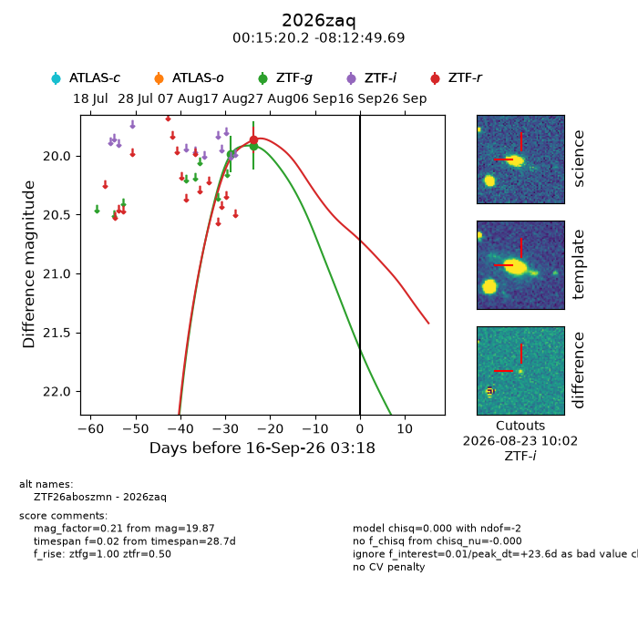
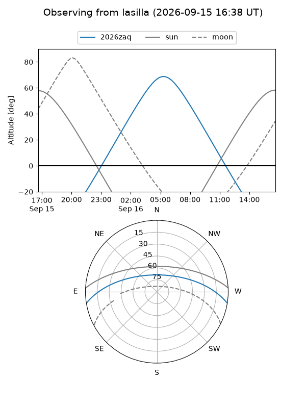
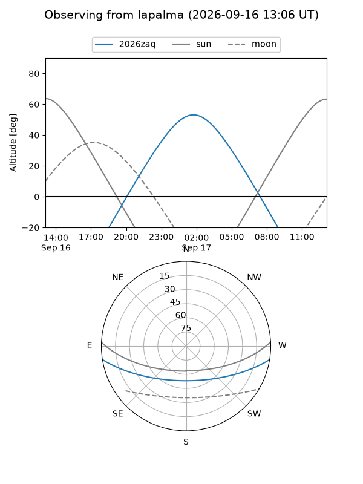
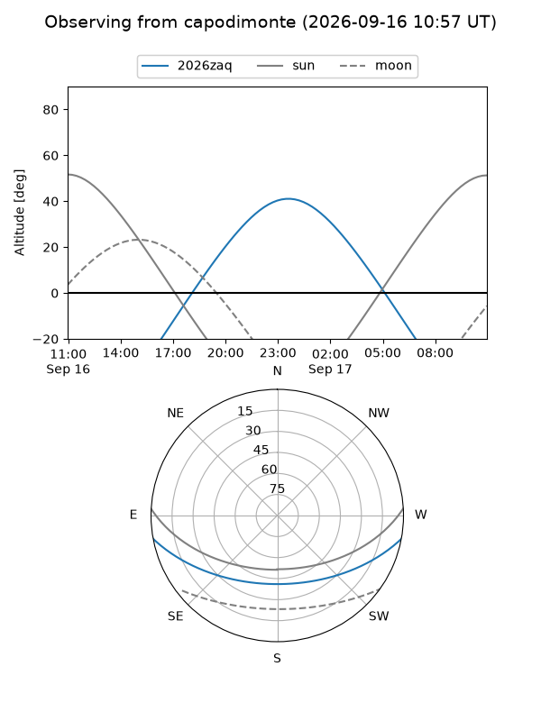
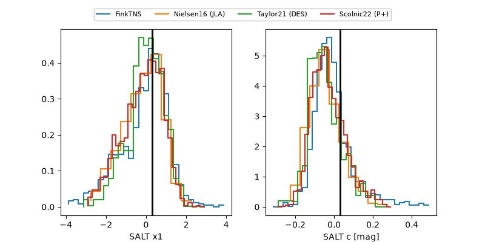

2026zaq
Target 2026zaq at 2026-09-16 13:40
Aliases and brokers:
FINK-ZTF: ztf.fink-portal.org/ZTF26aboszmn
Lasair-ZTF: lasair-ztf.lsst.ac.uk/objects/ZTF26aboszmn
ALeRCE-ZTF: alerce.online/object/ZTF26aboszmn
YSE-PZ: ziggy.ucolick.org/yse/transient_detail/2026zaq
TNS name: wis-tns.org/object/2026zaq
Direct TNS query: direct search
alt names
ZTF26aboszmn (ztf,fink_ztf)
2026zaq (tns,yse)
Coordinates:
equatorial (ra, dec) = 3.8340,-8.21380
equatorial (HMS+DMS) = 00:15:20.15,-08:12:49.69
galactic (l, b) = (96.9481,-69.24388)
Flags:
TNS type: nan
peak dt: +24.1
Photometry:
last ztfg=19.92, ztfr=19.87
2 ztfg, 1 ztfr detections
Lightcurve

Visibility



Additional plots
